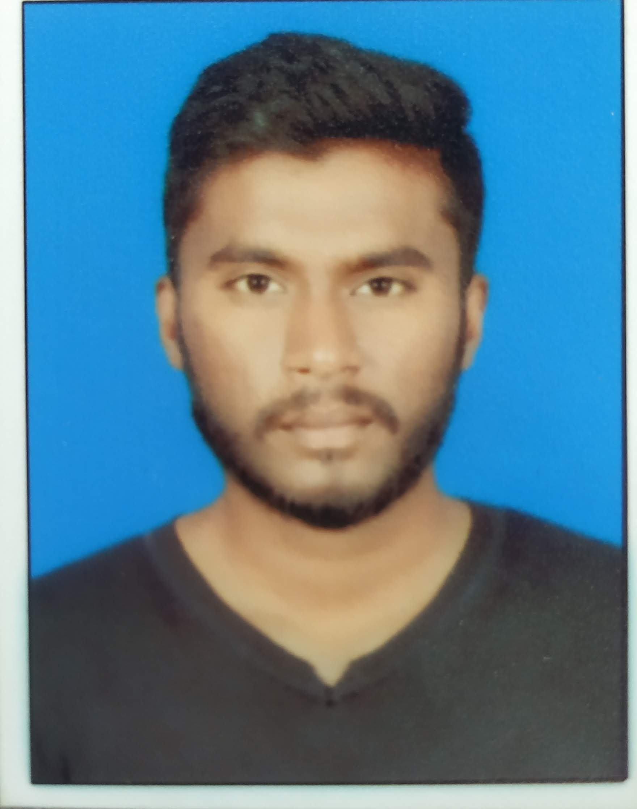

Saksham Nadar
(Engineer & Web Developer)
Summary:
Solution driven Web Developer adept at contributing to
highly collaborative work environment and finding
solutions. Proven experience developing
consumer-focused websites using HTML, CSS, and
JavaScript. Good knowledge of the best practices
for web design, user experience, and speed.
Education:
B-Tech in Mechatronics Engineering:- 7.7cgpa
Symbiosis Skills & Professional University
Pune, Maharashtra
Batch:- 2018-2022.
Junior College:- Science: 63%
Sinhgad College of Arts Commerce & Science
Pune, Maharashtra
Batch:-2016-2018
-
SSC:- 84%
Sinhgad City School
Pune, Maharashtra
Batch:- 2016
Skills:
HTML
CSS
JavaScript
JQuery
BootStrap
Python
Problem Solving
Innovative Ideas
Work Experience:
Intern
Faurecia Automotive Seating India Pvt Ltd, Chennai
Duration: 2 Months (3rd June 2019 - 10th July 2019)
Intern
Kansai Nerolac Paints Chiplun
Duration: 2 Months (10th June 2021 - 14th Aug 2021)
-
Project Engineer
IndiaFirst Robotics, Pune
Duration: 4 Months (6thNov 2021 - 12th Feb)
Hobbies:
Playing Cricket
Reading Autobiographies
Listening to Music
Watching movies in theatre
Reading about new technologies in market
Contact Details:
Mob:- 9860115087
Email:- sakshamnadar123@gmail.com
Address:- H-303 Unity Park Kondhwa Pune-411048.